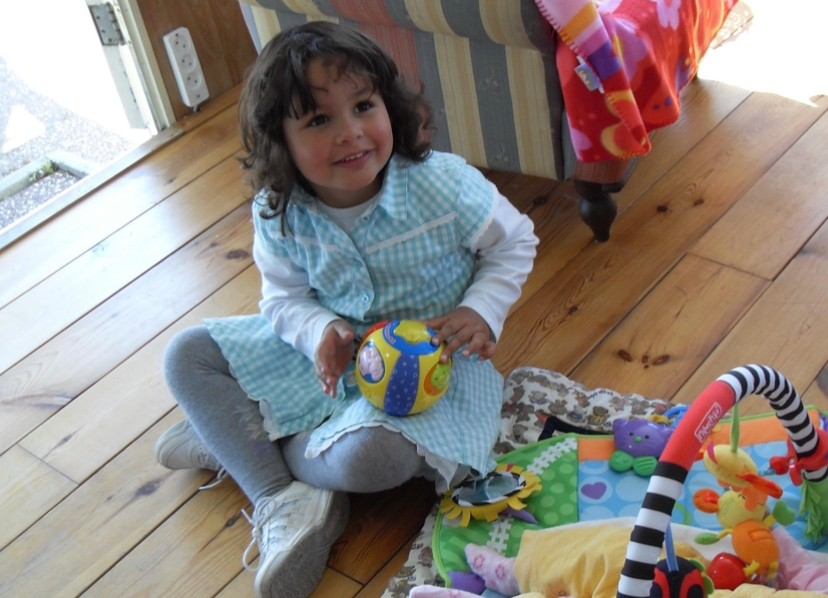

About Me
Fast learning, easily focused and both good at working independently and in groups.
My name is Lisa; I am 20 years old and I live in Lewedorp. My favourite way to spend my free time is being with my horses and my dog. I can watch most movies or shows, the same goes for music, as long as it's entertaining somehow. I also like reading, mostly about people and their stories or thoughts, I like trying to understand the complexity of the human mind and what makes people.
I can easily learn new things, work focused and independently. I am good at seeing things from multiple perspectives and I am open minded to new ideas or input. I chose HBO-ICT because it interested me in general. It's such a broad field and you can do so many different things with it and there's so much knowledge to be acquired. I got my propaedeutic certificate for Social Work because I studied it for a year, I enjoyed it too but I think a job in the IT field is more suitable for me long term.
Some fun facts about me
- I have two horses and a dog
- I was born in Zoetermeer, but moved to Zeeland when in my first year of high-school
- I live with my parents on an old farm in Lewedorp

